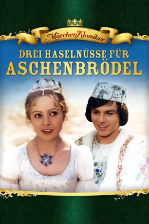

gesehen am 27.12.2018
gesehen am 27.12.2018Alternativ: Three Wishes for Cinderella (Englischer Titel) gesehen am 27.12.2018
 
 IMDB-Wertung: 7.9 / 10
IMDB-Wertung: 7.9 / 10  Metascore:
Metascore: 
Seit dem Tod ihres Vaters, lebt das hübsche und liebenswerte Aschenbrödel im Hause seiner raffgierigen und habsüchtigen Stiefmutter und führt hier das Leben einer einfachen Magd. Eine arbeitsreiche Woche folgt für das junge Mädchen deshalb der nächsten, bis sie eines Tages im Wald einen Prinzen trifft und sich Hals über Kopf in ihn verliebt. An ein Wiedersehen wäre für Aschenbrödel dabei natürlich eigentlich nicht zu denken, doch zum Glück ist sie im Besitz von drei magischen Haselnüssen.
Jahr: 1973
Dauer: 82 Minuten
FSK: 6
Land: Tschechoslowakei Studio: ARDTonspuren:
Untertitel:
Auflösung: 1080p (1920x1080) Größe: 7464 MB
Genre: Drama, Abenteuer, Fantasy, Familie, Liebe
Regisseur: Václav Vorlícek
Drehbuch: Bozena Nemcová, Frantisek Pavlícek
Soundtrack: Karel Svoboda
Darsteller:
 Rolf Hoppe als King
Rolf Hoppe als KingDatei: X:\Märchen\Drei Haselnüsse für Aschenbrödel (1973, FSK6, 1920x1080).mkv seit 25.12.2018
Festplatte: Kinder-Filme+Trick
 Es gibt insgesamt 61 Filme in der Gruppe 'Märchen'
Es gibt insgesamt 61 Filme in der Gruppe 'Märchen'